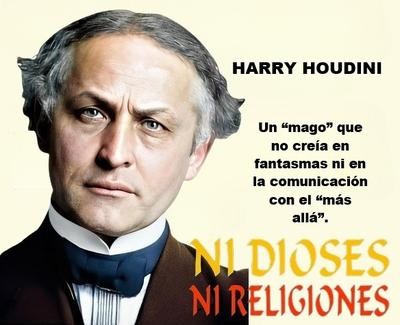

Halloween, con sus sombras, calabazas y supersticiones recicladas para el consumo masivo, es el día perfecto para recordar a un hombre que dedicó buena parte de su vida —y, en cierto modo, también de su muerte— a combatir el engaño espiritualista: Harry Houdini, fallecido precisamente un 31 de octubre, hace 99 años. Mientras hoy millones juegan con la idea de fantasmas y espíritus, Houdini se dedicó a demostrar que esos seres y los supuestos contactos con el más allá no son más que ilusionismo barato camuflado de fe. Y lo hizo con una pasión que mucha gente religiosa envidiaría… si la dirigiera al pensamiento crítico.


Húngaro de nacimiento, bajo el nombre de Erik Weisz (cambiado después por Erich Weiss al emigrar a Estados Unidos) —y reconvertido en Harry Houdini para los teatros del mundo— fue un genio del espectáculo, el escapista más famoso de la historia, un atleta disciplinado y un verdadero maestro del ilusionismo. Su vida fue la encarnación de la tenacidad humana: hijo de un rabino pobre emigrado a Estados Unidos, creció entre duros trabajos y privaciones, hasta que encontró en el circo y la magia su forma de vida.
Pero Houdini poseía algo más valioso que su talento físico: pensaba. Y en un mundo como el nuestro —saturado de misticismo barato, charlatanes de feria y «lideres espirituales» multimillonarios— pensar es un acto heroico. Cuando el espiritismo se puso de moda a fines del siglo XIX y principios del XX, Houdini decidió desenmascararlo. Y mientras millones creían que médiums hacían levitar mesas y hablaban con mu3rtos, él demostraba que eran simples trucos aprendidos en los manuales de ilusionismo… o peor aún, estafas emocionales dirigidas a deudos desesperados.
Su cruzada contra el engaño lo llevó incluso a enemistarse con gente poderosa. Siendo su ruptura más famosa con Sir Arthur Conan Doyle, el creador de Sherlock Holmes. Paradójicamente, Doyle, quien dio vida al detective más racional de la literatura, era él mismo presa de un pensamiento profundamente irracional. Creía en hadas, espíritus y mesas que hablan. Y estaba convencido de que Houdini poseía poderes paranormales que le permitían desmaterializarse realmente ante su público en sus shows. Y aunque Houdini insistía: «Todo es un truco», Doyle respondía: «No, es magia real». El creyente negándose a ver la evidencia; una historia tan vieja como la religión misma.
Pero la ruptura definitiva llegó cuando Houdini desenmascaró a la propia esposa de Conan Doyle, quien practicaba sesiones de espiritismo fraudulentas. Que una médium resultara ser falsa era tan sorprendente como descubrir que un pastor televisivo hizo millones de dólares vendiendo «agua bendita» para el cáncer: absolutamente predecible.
Resulta que Houdini falleció el 31 de octubre de 1926 en Detroit, víctima de una peritonitis, tras recibir golpes en el abdomen que le complicaron una apendicitis no tratada. Y aunque su muerte fue accidental, él quiso convertirla en su último experimento contra el espiritismo. Antes de mor1r, pactó con su esposa Wilhelmina Beatrice Rahner, apodada cariñosamente Bess, un plan extraordinario: si era posible comunicarse desde el más allá, él lo intentaría… pero usando un código secreto de diez palabras previamente acordadas. Él le comunicaría desde el más allá ese código a Bess, y sin eso, cualquier supuesto mensaje sería falso. Punto.
Durante diez años, Bess realizó fielmente sesiones con diferentes médiums para intentar recibir el mensaje de su esposo. ¿Resultados? Los mismos que cualquier misa, sesión de espiritismo o «sintonización cósmica». Los mismos que cualquier oración: silencio absoluto. Nada. Ni una palabra. Ni una letra del código. Cero comunicación. Porque ni Houdini ni nadie se ha comunicado jamás después de muerto.
Pero como siempre ocurre con los creyentes fanáticos, la realidad no basta para destruir su fe: hay que protegerla a toda costa. Así que los espiritistas difundieron lo que hoy llamaríamos una fake news: que Bess había recibido el mensaje secreto. Y ella misma tuvo que desmentirlos públicamente. Porque como vemos, la manipulación religiosa no empezó con las redes sociales.
¿Y por qué recordar a Houdini hoy? —Porque su lucha sigue siendo necesaria. El espiritismo no mur1ó; sólo evolucionó. Hoy lleva nombres nuevos: «canalizaciones de luz», «contacto angélico», «médiums certificados», «terapias energéticas», «psicología cuántica» (spoiler: no tiene nada de cuántica). Y sigue aprovechándose del dolor humano y de la ignorancia emocional.
Religiones y supersticiones explotan la misma debilidad psicológica que explotaban en tiempos de Houdini: el miedo a la muerte. Nos prometen consuelo a cambio de renunciar al pensamiento crítico. Pero Houdini nos dejó una lección inmortal: Cuando dejamos de pensar, cualquiera puede atrapar nuestra mente.
Al final, la verdadera magia no está en mesas voladoras ni mensajes interdimensionales: está en la capacidad humana de liberarse del engaño. Houdini se escapó de camisas de fuerza, cadenas y tanques sellados… pero sobre todo, escapó de la prisión mental de la superstición.
Hoy, a 99 años de su muerte, ningún espíritu ha regresado para contarnos cómo es el «más allá». Ni Houdini, ni Einstein, ni tu tía abuela ni tu perro. Y no es porque vivan en otra dimensión, sino porque cuando el cerebro muere, muere también la conciencia. No hay cielo, ni infierno, ni purgatorio, ni salones astrales. Hay vida aquí y ahora. Todo lo demás es ilusionismo.
Así que este Halloween, más que temer a fantasmas, deberíamos temer a algo mucho más real: la credulidad humana manipulada. Y recordar, como lo hizo Houdini, que la libertad más importante es la libertad de pensar.
[Godless Freeman]
Comentarios
Comments powered by Disqus